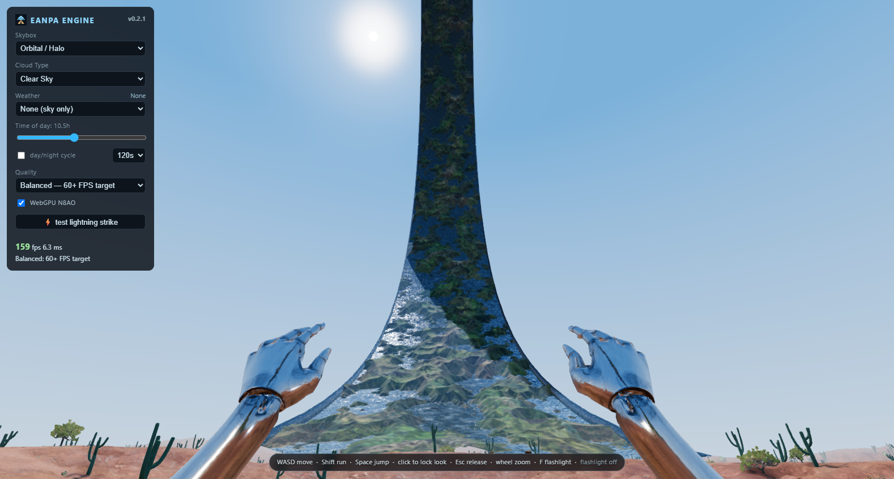
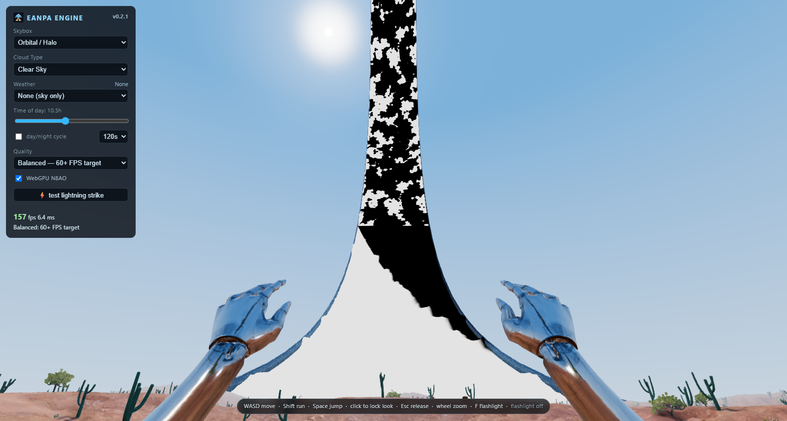
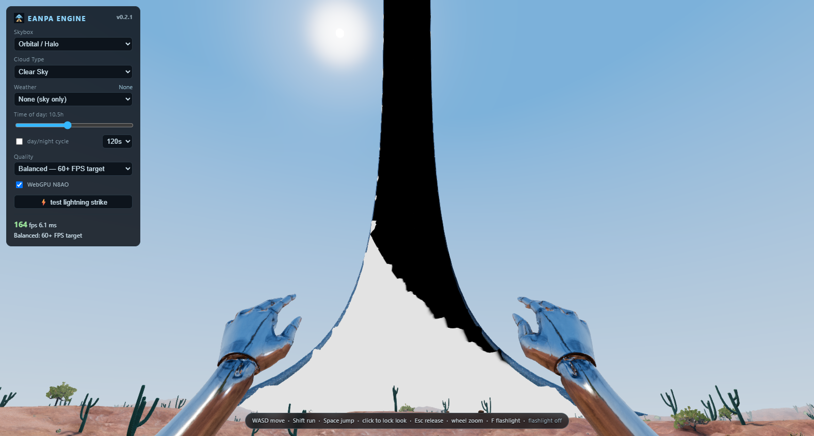
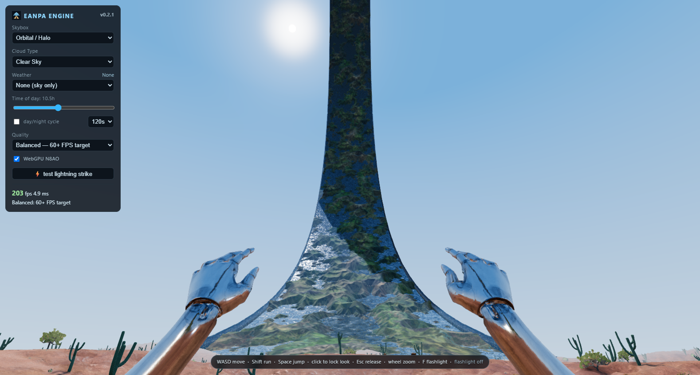
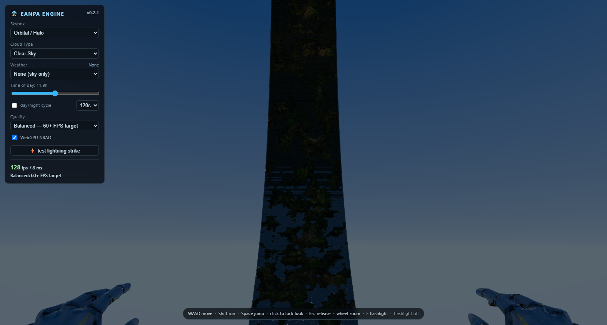

The previous review missed the cutoff you pointed out. Correcting the cylinder center and distant depth precision had left a separate error: short shadow rays were discarded at the arc's solar tangent, lighting the water while the raised land stayed shadowed. The revised intersection keeps that part of the ring opaque.
Open the engine · Technical report · GPU checks
Switch between matched captures to inspect the former horizontal break in the water. Camera, sun, and ring animation time match. Click the image for full size. Reviewed September 10 and published in the live demo.

Black means blocked sunlight; white means visible sunlight. Previously, water turned white abruptly across a horizontal boundary while land remained black. The corrected mask retains the oblique shadow edge set by the ring width.



Both directions recorded with the normal 120-second day cycle and normal surface lighting and environment updates. The brief twilight handoff is smooth; midday darkness follows the geometric shadow.
86 tests pass, including rays against a triangulated ring independent of the analytic shader. GPU results are available in the linked checks. Frame-rate overlays in these captures are not controlled benchmarks.
Historical frozen captures isolate the first two corrections. They did not address the short-ray cutoff found in this follow-up.

{kind=link}
{kind=link}